<!DOCTYPE lake>
<h2 data-lake-id="oVpx9" id="oVpx9"><span data-lake-id="u4eddd543" id="u4eddd543">学习目标</span></h2><ol list="ucc68fd21"><li data-lake-id="u575cc317" fid="u2df40794" id="u575cc317"><span data-lake-id="ub8cc853d" id="ub8cc853d">理解I2C通讯原理</span></li><li data-lake-id="ufc55bde5" fid="u2df40794" id="ufc55bde5"><span data-lake-id="udd1e99dc" id="udd1e99dc">理解I2C通讯过程中的信号</span></li><li data-lake-id="u11fd2723" fid="u2df40794" id="u11fd2723"><span data-lake-id="u0abb9204" id="u0abb9204">理解软件I2C实现过程</span></li><li data-lake-id="u3ccc0058" fid="u2df40794" id="u3ccc0058"><span data-lake-id="uaaa41f09" id="uaaa41f09">理解硬件I2C的工作内容</span></li></ol><h2 data-lake-id="hYc2S" id="hYc2S"><span data-lake-id="u97c74969" id="u97c74969">学习内容</span></h2><p data-lake-id="ud8c1682d" id="ud8c1682d"><span data-lake-id="ubf4df933" id="ubf4df933">在消费电子、工业电子等领域，会使用各种类型的芯片，如微控制器、电源管理、显示驱动、传感器、存储器、转换器等，它们有着不同的功能。有时需要快速地进行数据交互。为了使用最简单的方式使这些芯片互联互通，I2C（Inter-Integrated Circuit）协议应运而生。</span></p><p data-lake-id="uaca0c663" id="uaca0c663"><strong><span data-lake-id="u2537c0d6" id="u2537c0d6">I2C协议（或称IIC）</span></strong><span data-lake-id="u985f00a2" id="u985f00a2">是由飞利浦（现在的恩智浦半导体）公司开发的一种通用的总线协议。它使用两根线（时钟线和数据线）来传输数据，支持多个设备共享同一条总线。 I2C协议通常用于连接微控制器、传感器、存储器和其他外围设备。</span></p><h3 data-lake-id="U0Qwx" id="U0Qwx"><span data-lake-id="u417fddbf" id="u417fddbf">I2C通讯规则</span></h3><p data-lake-id="u42515af8" id="u42515af8">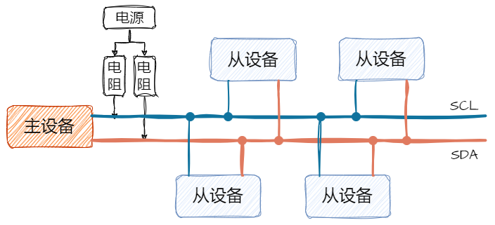</p><p data-lake-id="ufb27c28b" id="ufb27c28b"><span data-lake-id="u3f8a8345" id="u3f8a8345">I2C总线包括两根信号线：SDA（串行数据线）和SCL（串行时钟线）。这两根信号线共用一个总线，因此在总线上可以连接多个设备。在I2C总线上，每个设备都有一个唯一的地址，用于标识设备。</span></p><p data-lake-id="u06105359" id="u06105359"><span data-lake-id="ue05ae4a4" id="ue05ae4a4">SCL线是时钟线，用于控制数据传输的速度和时序；SDA线是数据线，用于传输实际的数据.</span></p><h3 data-lake-id="vie6w" id="vie6w"><span data-lake-id="u050bfcee" id="u050bfcee">I2C写操作</span></h3><p data-lake-id="u218e12fb" id="u218e12fb"><span data-lake-id="ua87b7f9d" id="ua87b7f9d">流程如下:</span></p><ol list="ud9ffcaf3"><li data-lake-id="ub1cda289" fid="u81a601f2" id="ub1cda289"><span data-lake-id="uba8df560" id="uba8df560">开始。</span></li><li data-lake-id="ua704ab40" fid="u81a601f2" id="ua704ab40"><span data-lake-id="u4725a74e" id="u4725a74e">发送设备地址，等待从设备响应</span></li><li data-lake-id="u33d4ee6b" fid="u81a601f2" id="u33d4ee6b"><span data-lake-id="ue8b53e92" id="ue8b53e92">发送寄存器地址，等待从设备响应</span></li><li data-lake-id="u6b71e69a" fid="u81a601f2" id="u6b71e69a"><span data-lake-id="u25f5e892" id="u25f5e892">发送一个字节，等待从设备响应。这个操作是循环执行，直到没有数据。</span></li><li data-lake-id="u67c376d9" fid="u81a601f2" id="u67c376d9"><span data-lake-id="u41f04334" id="u41f04334">停止。</span></li></ol><p data-lake-id="uda311746" id="uda311746">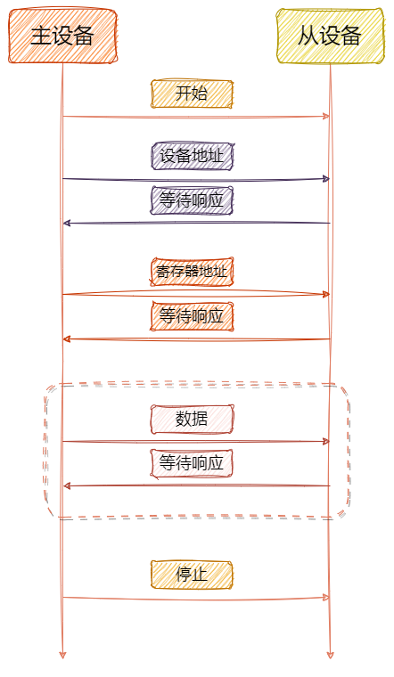</p><h3 data-lake-id="OM4ro" id="OM4ro"><span data-lake-id="u8e3020cd" id="u8e3020cd">I2C读流程</span></h3><p data-lake-id="ucd18ae5f" id="ucd18ae5f"><span data-lake-id="u40a3ff23" id="u40a3ff23">流程如下：</span></p><ol list="uba286669"><li data-lake-id="u91d6971b" fid="u81a601f2" id="u91d6971b"><span data-lake-id="uec6b95a6" id="uec6b95a6">开始。</span></li><li data-lake-id="u9fb37c69" fid="u81a601f2" id="u9fb37c69"><span data-lake-id="ue8ad1829" id="ue8ad1829">发送设备地址（写地址），等待从设备响应</span></li><li data-lake-id="u7f72c8a7" fid="u81a601f2" id="u7f72c8a7"><span data-lake-id="uace78aa7" id="uace78aa7">发送寄存器地址，等待从设备响应。</span></li><li data-lake-id="u809e5b9c" fid="u81a601f2" id="u809e5b9c"><span data-lake-id="ud4a4222a" id="ud4a4222a">开始</span></li><li data-lake-id="ud0922555" fid="u81a601f2" id="ud0922555"><span data-lake-id="u899bc68b" id="u899bc68b">发送设备地址（读地址），等待从设备响应</span></li><li data-lake-id="u65853567" fid="u81a601f2" id="u65853567"><span data-lake-id="u7dc78772" id="u7dc78772">接收一个字节，发送响应给从设备。这个操作是循环执行，直到没有数据。当是最后一个数据时，发送空响应。</span></li><li data-lake-id="u19d75a51" fid="u81a601f2" id="u19d75a51"><span data-lake-id="u81a1e1a9" id="u81a1e1a9">停止。</span></li></ol><p data-lake-id="ufcd0b386" id="ufcd0b386">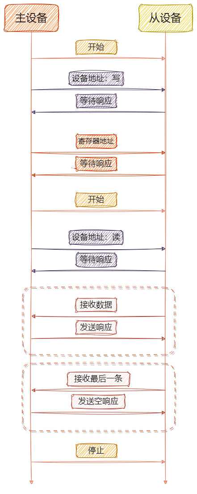</p><h3 data-lake-id="YEZh1" id="YEZh1"><span data-lake-id="u787d8698" id="u787d8698">通讯信号</span></h3><h4 data-lake-id="amrqH" id="amrqH"><span data-lake-id="u2c5db844" id="u2c5db844">开始</span></h4><p data-lake-id="u71174ce6" id="u71174ce6">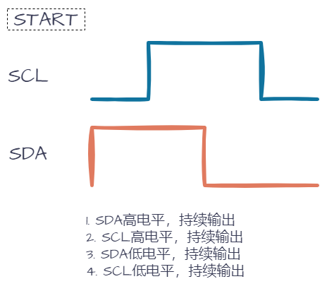</p><span class="yuque-card-unsupported">[codeblock]</span><p data-lake-id="u6025d2a5" id="u6025d2a5"><br/></p><h4 data-lake-id="ryfaT" id="ryfaT"><span data-lake-id="ue6022db8" id="ue6022db8">结束</span></h4><p data-lake-id="u0ba62536" id="u0ba62536">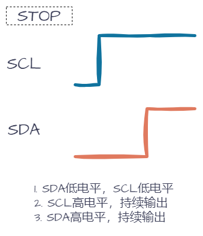</p><span class="yuque-card-unsupported">[codeblock]</span><h4 data-lake-id="iHXrq" id="iHXrq"><span data-lake-id="u768cdb17" id="u768cdb17">发送数据</span></h4><h5 data-lake-id="l5ZQs" id="l5ZQs"><span data-lake-id="u0565b0be" id="u0565b0be">bit发送</span></h5><p data-lake-id="ua147d94d" id="ua147d94d">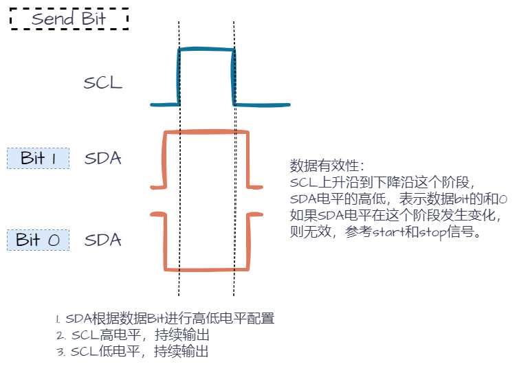</p><p data-lake-id="u5ffee89d" id="u5ffee89d"><span data-lake-id="u3a300aa4" id="u3a300aa4">数据有效性：</span></p><ul list="u2077e81c"><li data-lake-id="u4fc4d8a1" fid="ue5255d53" id="u4fc4d8a1"><span data-lake-id="u30893b0d" id="u30893b0d">SCL上升沿到下降沿这个阶段，SDA电平的高低，表示数据bit的1和0</span></li><li data-lake-id="u0bf68be3" fid="ue5255d53" id="u0bf68be3"><span data-lake-id="uc347f452" id="uc347f452">如果SDA电平在这个阶段发生变化，则无效，参考start和stop信号。</span></li></ul><h5 data-lake-id="FzqNs" id="FzqNs"><span data-lake-id="ub53657eb" id="ub53657eb">Byte发送</span></h5><p data-lake-id="u4d54be43" id="u4d54be43"><span data-lake-id="ub4c618ea" id="ub4c618ea">基于数据有效性，将byte按bit位变化为高低电平，发送出去。</span></p><p data-lake-id="ue4ea3da4" id="ue4ea3da4">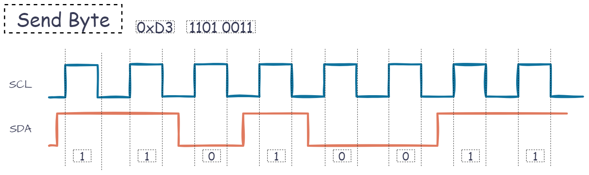</p><span class="yuque-card-unsupported">[codeblock]</span><p data-lake-id="ud2313369" id="ud2313369"><span data-lake-id="ue7250753" id="ue7250753">​</span><br/></p><h4 data-lake-id="tF0Ms" id="tF0Ms"><span data-lake-id="u7366ef46" id="u7366ef46">等待响应</span></h4><p data-lake-id="u6d50a687" id="u6d50a687"><span data-lake-id="ub8b726f8" id="ub8b726f8">wait ack：</span><em><span class="lake-fontsize-10" data-lake-id="u7fc54a20" id="u7fc54a20" style="color: rgb(247, 49, 49)">Ack</span></em><span class="lake-fontsize-10" data-lake-id="ub3e4cd9c" id="ub3e4cd9c" style="color: rgb(51, 51, 51)">nowledge character。表示等待响应，每发送一个数据，需要确认对方是否收到，就需要等待对方响应。</span></p><p data-lake-id="u139a696c" id="u139a696c">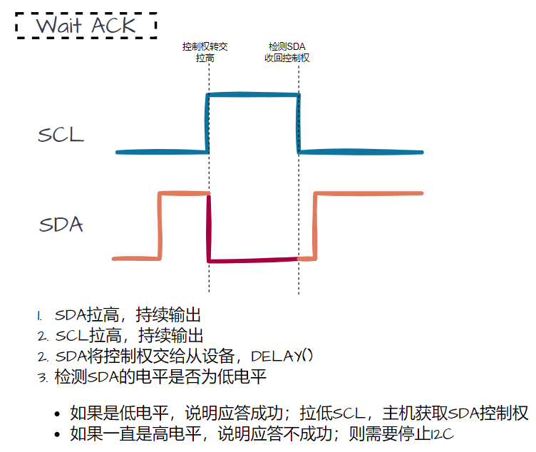</p><span class="yuque-card-unsupported">[codeblock]</span><h4 data-lake-id="hhatz" id="hhatz"><span data-lake-id="ua01dd6fc" id="ua01dd6fc">接收数据</span></h4><h5 data-lake-id="NEmLO" id="NEmLO"><span data-lake-id="udabf67a0" id="udabf67a0">bit接收</span></h5><p data-lake-id="u10a66b4a" id="u10a66b4a">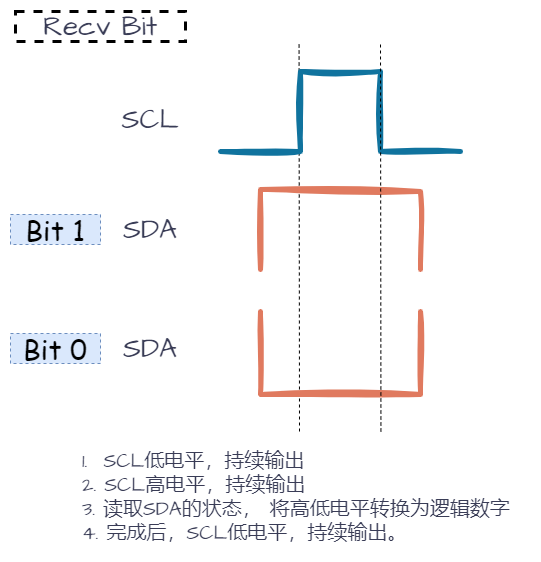</p><h5 data-lake-id="UC649" id="UC649"><span data-lake-id="uf9042f06" id="uf9042f06">Byte接收</span></h5><p data-lake-id="uef4a1466" id="uef4a1466">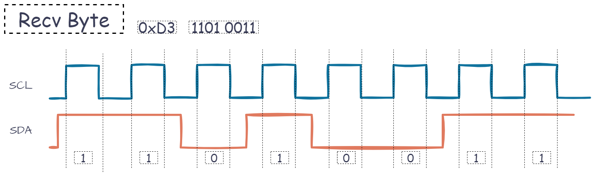</p><span class="yuque-card-unsupported">[codeblock]</span><p data-lake-id="u14f5d516" id="u14f5d516"><br/></p><h4 data-lake-id="eMVFv" id="eMVFv"><span data-lake-id="u4d3919aa" id="u4d3919aa">发送响应</span></h4><p data-lake-id="uce74eb41" id="uce74eb41">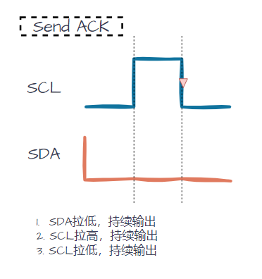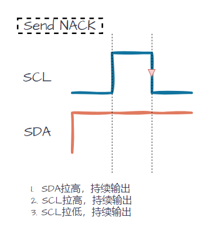</p><span class="yuque-card-unsupported">[codeblock]</span><span class="yuque-card-unsupported">[codeblock]</span><p data-lake-id="u2c171e79" id="u2c171e79"><br/></p><p data-lake-id="uaade800c" id="uaade800c"><span data-lake-id="u61652414" id="u61652414">​</span><br/></p>